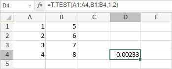

T.TEST Funkcija
T.TEST funkcija je jedna od statističkih funkcija. Koristi se da vrati verovatnoću povezanú sa Studentovim t-testom. Koristite T.TEST da odredite da li dve uzorke verovatno potiču iz istih populacija sa istom srednjom vrednošću.
Sintaksa
T.TEST(array1, array2, tails, type)
T.TEST funkcija ima sledeće argumente:
| Argument | Opis |
|---|---|
| array1 | Prvi opseg numeričkih vrednosti. |
| array2 | Drugi opseg numeričkih vrednosti. |
| tails | Broj repova distribucije. Ako je 1, funkcija koristi jednoropnu distribuciju. Ako je 2, funkcija koristi dvostruku distribuciju. |
| type | Numerička vrednost koja određuje tip t-testa koji će se izvršiti. Moguće vrednosti su navedene u tabeli ispod. |
Argument type može biti jedna od sledećih vrednosti:
| Numerička vrednost | Tip t-testa |
|---|---|
| 1 | Povezani (paired) |
| 2 | Dva uzorka sa jednakom varijansom (homoscedastic) |
| 3 | Dva uzorka sa nejednakom varijansom (heteroscedastic) |
Napomene
Kako primeniti T.TEST funkciju.
Primeri
Slika ispod prikazuje rezultat koji vraća T.TEST funkcija.
